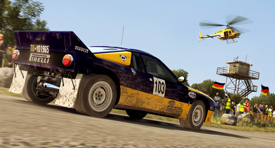

About the Game:
DiRT Rally is the most authentic, challenging and thrilling rally game ever made, road-tested over 80 million miles by the DiRT community. It captures the essence of what makes rally unique like no other game: that white knuckle feeling of racing on the edge; trying to remain in control of your emotions as you hurtle along dangerous, undulating roads at breakneck speed, aiming to squeeze everything out of your car whilst knowing that one crash could irreparably harm your stage time. It’s the ultimate test of a driver’s skill, and the ultimate in high risk, high reward gameplay.
Legendary Rally Cars
Rally is about having the right tools, the right strategy and the right team. DiRT Rally has all of those. It boasts 39 of the most iconic and relevant cars from yesteryear through to modern day, representing the cars that the players want, and the ones that make the most sense for the surfaces they race on.
Exlain Car
ExplainCar
Explain Car
SIX MASSIVE EVENTS OVER 70 STAGES
Winding paths through forests, death defying drops off hillsides and narrow mountain paths are what this is all about; it’s you and your car versus the road ahead. Head to the muddy paths of Wales, the dusty trails of Greece and the icy tarmac of Monte Carlo. Take on the legendary hillclimb of Pikes Peak, the snowy thrills of Sweden, and the epic scenery of Finland. DiRT Rally has the iconic locations to test your nerve and delight your senses.
Exlain Track
Explain Track
Explain Track
CHALLENGING, UNCOMPROMISING PHYSICS AND TUNING
WTo take off-road racing to a level of realism not reached before, Codemasters has completely rebuilt the physical simulation for DIRT Rally. To adequately capture how it feels to race across changing surfaces, the Codemasters team has created brand new models for differential, suspension, engine mapping and turbo modelling. Codemasters has also modelled the way in which loose surfaces collect under the wheels during lateral sliding, creating a completely new feel to sliding around corners. This new physical simulation conveys the character of the compelling selection of cars as well as conveying the nuances of the game’s high fidelity racing surfaces.
Exlain Drifting
Explain Menu Tuning, etc.
Explain Something